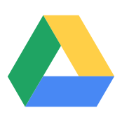
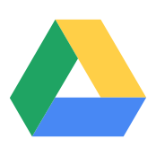
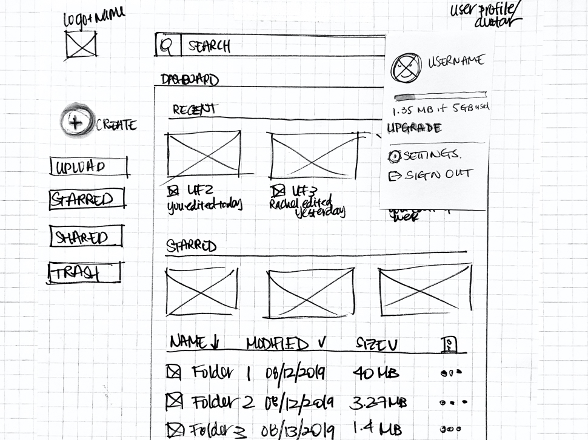
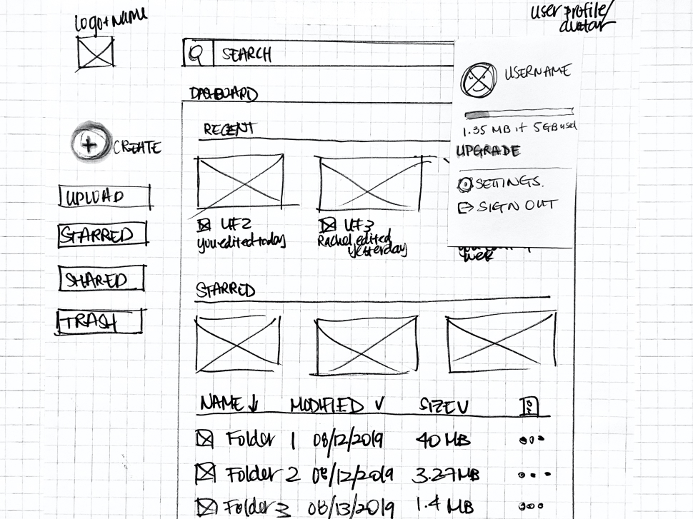

Problem
There are endless possibilities in the cloud storage and organization market. And while there are many big-name competitors in the space, there’s definitely room for improvement. As a frequent user myself, I was excited to research and create an iteration of products already found in the market.
Solution
After conducting user surveys, I found that participants want a clean and intuitive interface that makes storing, organizing, and sharing content a pleasant experience.
To build on that, the most commonly stored content are image files. That opened up opportunities to implement image editing tools into the interface.
User Surveys


INSIGHTS
While collaboration features are important, most participants are mainly looking for the ability to send out a shareable link to their files.
As most participants utilize more than one cloud storage product, this could potentially indicate that there’s room for a new platform to join the market that is able to seamlessly combine key features effectively.
As images are the most commonly stored item, there’s an opportunity to include photo/image editing tools.
Competitive Analysis
 


After conducting the user survey, I was able to perform a competitive analysis. I opted for the top three most commonly used products based on my previous survey: Google Drive, iCloud, and Dropbox. I was able to identify an opportunity for a better interface experience, as well as implementing simple image-editing tools.
After analyzing strengths shared amongst the competitors, combined with the information I have gathered from the survey, I was able to identify standard features that needed to be implemented into my product.
As I mentioned earlier, I am a frequent cloud storage user myself. Having said that, one of my biggest frustrations with Google Drive is the inability to simply rotate an image file after it has been uploaded. However, they do allow users to connect to outside apps, but to me that’s just an extra and unnecessary step.
Surprisingly, the other two competitors lack this feature as well. (The option is available if a user edits the photo in the iCloud Photo Library and the change will update all connected devices. iCloud.com doesn’t not have the option to rotate photos.)
A simple Google search revealed other users looking for solutions. And with images being the most commonly stored item, I knew I could confidently include an image-editing tool into my design.
Personas
The personas in this project were created based on the user surveys to further understand different user motivations, frustrations, and goals.
View full personas
Alex D.

GOALS
• Collaborate with her classmates remotely• Sync content online, not on her device
• Pay no more than .99/month for services
FRUSTRATIONS
• Drive needs internet connection• Privacy is an issue
• Doesn’t like having to use a gmail account
Tom G.

GOALS
• Save money on storage/memory space• Keep up with clients and colleagues at work
• Not worry about losing physical hard drives
FRUSTRATIONS
• Organizing is time consuming• Privacy is an issue
• Lack of image editing tools for uploaded files
User Stories + Flows
After conducting research, I was able to identify important tasks needed in a cloud storage product. And with that, I created user flows to successfully complete said tasks.
View user stories + flows
Sketches + Low Fidelity Wireframes
I sketched out a rough idea of how I wanted my wireframes to look before producing digital copies. After I was satisfied with my rough draft, I created my lo-fi wireframes with Figma. I put together enough screens for a prototype and began conducting usability tests in Invision.
Overall, I had positive responses to my designs and everyone was able to navigate the site smoothly. I would say that the only issue I encountered was when I asked testers to move a file into a folder, almost all testers opted to “drag-and-drop” items over. It wasn’t something I could easily execute into my prototype. However, it was something I knew needed to be implemented into the final product.


 


Brand + Identity


BRAINSTORM
I first began my brainstorming process by performing mind mapping exercises. From there, I really liked the idea of using the word “cache”. At first, I opted to use “Cache Cloud” but I wasn’t satisfied with the idea and kept on researching.
cache
(n): a collection of items of the same type stored in a hidden or inaccessible place.
(v): store away in hiding or for future use.
BRAND NAME
After a bit of research and more brainstorming, I settled on “CacheCow”. Majority of users are concerned about their safety and privacy when it comes to cloud storage systems. Cache as a noun means a collection of items of the same type stored in a hidden or inaccessible place. As a verb it means to store away in hiding or for future use. The implication of a safe, secure place is there. It’s also a play on words with “Cash Cow” as the words cash and cache are pronounced the same.
LOGO
Once I had determined the name of the brand, I started sketching out potential ideas. I narrowed down my options to two different concepts and refined them using Figma.
I ran a few preference tests over my refined, digital logos and the second option was by far the crowd favorite. I was pleased with the outcome, as I prefered that logo too. It had a cleaner and “strong” look to it while still maintaining a playful and approachable feel.
COLORS
Green is one of the main colors used in this product. Green can mean a multitude of things but in this case, it is used because it has implications of safety and a sense of calm. As the name CacheCow is a play on words with “Cash Cow”, the color green connects closely to the word “cash”.
I went with an analogous color pallette for my designs with green and blue but it’s more of a monochromatic color scheme with a pop of green. I want to keep the colors somewhat muted for legibility and clarity. Like the color green, blue induces a sense of calm and peace. It is also associated with trust and honesty while the color gray provides a steadying affect on other colors around it.


TYPOGRAPHY
I wanted an interface that was minimalistic and modern. All to create an atmosphere that was organized and brought users a sense of calm. Having said that, I knew my best bet was to use sans-serif, geometric typefaces in order to emulate the look I was going for.
I ended up going with SF Pro Text for the entire product. I liked how my logo used all caps and I wanted to implement that further into my design. However, the font used in the logo was a little too flashy for the look I was going for.
I opted to use SF Pro Text for the body text and SF Pro Text in forced small caps for everything else. As the typefaces are essentially the same, the font pairing worked perfectly.


High Fidelity Mockups
After establishing my product’s brand and curating a style guide, I was able to work on designing my high-fidelity mockup screens. This consisted of implementing my style guide into the wireframes that I had created earlier.
This whole process took me the longest as I had to re-design my screens several times. Despite receiving positive feedback on my initial screens, I was pretty unsatisfied with the results. It lacked identity and cohesion. I knew I was in trouble when people asked why I had used a nature shot in the landing page. Other than matching the color scheme, the photo didn’t serve a real purpose.
Another issue with the designs were that they had a different feel than my logo. The interface had a sense of luxury and seriousness, while my logo had a more playful, modern vibe.
I had to step back and look over my style guide again. In fact, I went over my notes from the very beginning of this project. I had to remind myself who my target audience was and what the initial problems were.
After a bit of research and work, I was able to come with my final designs. At last, my designs had a sense of cohesion and my brand’s voice was loud and clear.

A/B Preference Test
I performed a few preference tests in order to maintain and further ensure that my designs were user-centric.

DIVIDERS
65% of participants preferred lines to divide content. While I do like utilizing different colors to enhance legibility, I wanted to see if just regulars lines would be better. I was pretty surprised with the results. I didn’t expect the lines to be favored this much. I figured that perhaps major competitors don’t use this method (colored dividers) and this is what most are accustomed to.

DASHBOARD LOGO
68% of participants preferred the isolated logo over the logo with words. I felt as if both versions could have worked well. The isolated logo does have a cleaner look, though.

BUTTON COLOR
53% of participants preferred the lighter colored “Create” button over the green button. While it wasn’t favored drastically, I figured keeping that color light would further distinguish the CTA buttons on the landing page that are colored the same.
USABILITY TESTING
I performed usability tests with my high-fidelity mock-ups. I assigned participants 3 high-priority tasks: 1. Create an account, 2. Upload a piece of content , and 3. Create a new folder and move a file into it.
All participants completed the tasks smoothly and quickly. However, similar to the first usability tests, users attempted to “click-and-drag” items. It’s happened enough times that it needs to be implemented into the final product.
FINAL MOCKUP
I performed usability tests with my high-fidelity mock-ups. I assigned participants 3 high-priority tasks: 1. Create an account, 2. Upload a piece of content , and 3. Create a new folder and move a file into it.
All participants completed the tasks smoothly and quickly. However, similar to the first usability tests, users attempted to “click-and-drag” items. It’s happened enough times that it needs to be implemented into the final product.
DESKTOP


MOBILE

Conclusion
I have learned so much these last couple of weeks. I went through a roller coaster of emotions while working on this project. From complete defeat and hopelessness, to extreme happiness when my designs started falling into place.
I found it extremely important to always keep in mind what the actual problem is that you’re trying to solve. It’s so easy to get lost in the process. I had to really step back a couple of times to make sure that my designs aligned with solutions.
To build on what I said before, while working on my visual designs, I lost confidence in my product. Not only did I feel like my product lacked innovation and originality, but my branding and style didn’t have a sense of cohesion.
And as I mentioned before, I had to step back and remind myself of the initial problem statements and research. Ultimately, I had to set my ego aside and simply trust the research.
Lastly, I think I realized just how vital research and user testing is throughout the entire process. Designs and concepts that make sense to me, may not always make sense to others.
I’ve learned so much working on this project. If I had a bit more time, I would’ve expanded and worked on the CacheCow suite (Word doc, Presentation, and Sheets). I would have also added product shots in my landing page. I knew my landing pages lacked substance and I realized it didn’t contain visuals of the interface.
Overall, I am pleased with the image editing features I was able to implement into the product. The users are now able to edit files after it has been uploaded to the cloud.